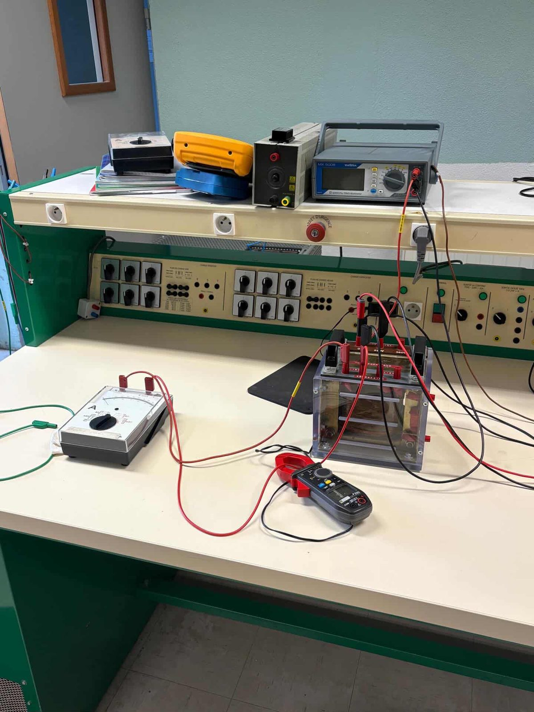
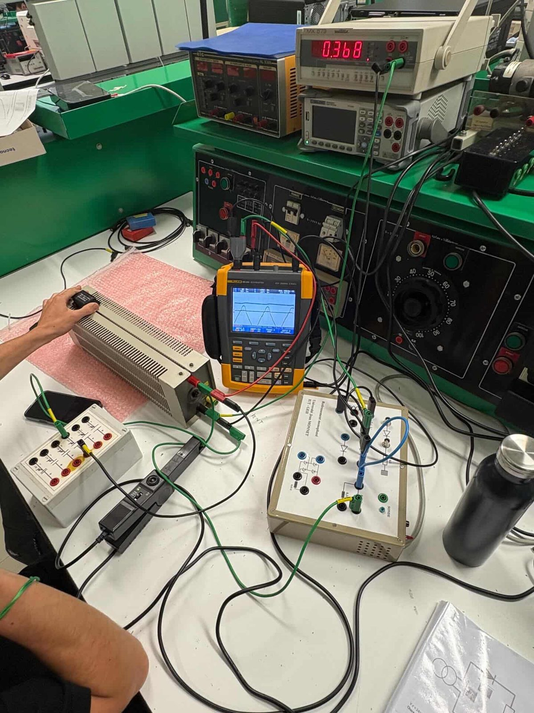
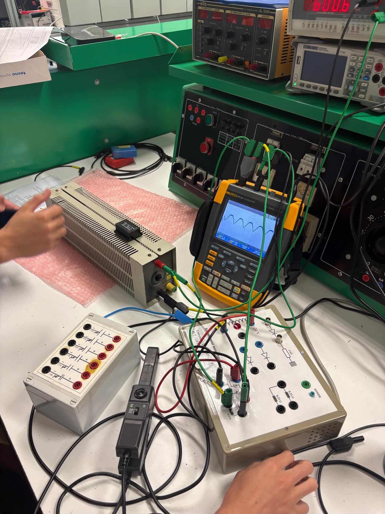

Mes projets
Voici ce sur quoi j'ai vraiment passé du temps cette année : les deux SAÉ qui m'ont le plus marqué, et un tour rapide des TP que j'ai faits.
SAÉ Robot — Commande moteur
Décembre 2025 · Réalisation solo
Le contexte
L'idée, c'était de concevoir la carte qui pilote les deux moteurs CC d'un petit robot mobile. Chaque moteur devait pouvoir tourner dans les deux sens, avec une vitesse réglable (par PWM).
Ce que j'ai choisi de faire
J'ai opté pour une solution à base de transistors discrets et de relais d'inversion : un BC337 attaque la base d'un BDX33 (transistor de puissance Darlington) qui pilote le moteur, et un autre BC337 commande la bobine d'un relais 8 V qui inverse la polarité du moteur pour changer son sens de rotation.

Ce que j'ai appris
- Le rôle du transistor en commutation : il sert d'interrupteur commandé, et il fait aussi le lien entre un signal logique faible (PWM) et une charge qui tire plus de courant.
- Pourquoi on met une diode de roue libre (1N4148) : sans elle, la bobine du relais peut envoyer une surtension à la coupure et flinguer le transistor.
- Que tester sous Proteus avant de souder, c'est gagner beaucoup de temps.
Les compétences que ça a mis en jeu
- AC 11.01 — Analyser le système avant de le câbler.
- AC 11.02 — Faire un prototype Proteus + un test Arduino bouton/LED en parallèle.
- AC 11.03 — Le schéma avec son cartouche, premier pas vers un vrai dossier de fabrication.
- AC 12.03 — Réfléchir à ce qui se passe si un composant lâche.
SAÉ Info — Simulateur balistique
Janvier — Mars 2026 · Physique en binôme avec Samuel Nouis, code en solo
Le contexte
Le but, c'était d'écrire un programme C++ qui simule l'interception d'un projectile par un autre. Le projet s'est fait en deux temps : d'abord la modélisation physique (en binôme), puis le code (j'ai géré ça tout seul).
La physique derrière
On a simplifié : les projectiles sont des points matériels, soumis uniquement à la pesanteur (g = 9,8 m·s−2), pas de frottements, mouvement dans un plan. La condition d'interception donne une équation du second degré en tan(αi), qu'on peut résoudre directement.
Côté code
J'ai découpé le projet en plusieurs fichiers (sous Code::Blocks), pour que chaque morceau ait son rôle bien défini :
main.cpp— la partie qui parle à l'utilisateur, demande les valeurs et orchestre le restebalistique.cpp/.h— tous les calculs physiques (trajectoires, résolution, vérification)utilitaires.cpp/.h— les petites fonctions utiles (conversion degrés/radians, etc.)test_balistique.cpp— des tests sur des cas particuliers pour vérifier que ça marcheREADME— comment compiler et utiliser le programme
Les TP, en gros
Électronique analogique
TP5 transistor et LED (polarisation, caractérisation NPN, signal triangle). Binôme Baudrey/Delais.
Amplificateurs opérationnels
TP1 à TP7 : TL081, détecteur de seuil, trigger non-inverseur, diagrammes de Bode, filtrage. Binôme Baudrey/Delais.
Automatisme et FPGA
Quartus : décodeur 7 segments (seg_a à seg_g), compteur, conception combinatoire.
Programmation C++
Mini-projets console (sprint, tableau, 2.7). Code::Blocks.
TP physique
TP1 et TP3. Binôme Baudrey/Delais.
TP énergie & transformateurs
Mesures sur transformateur monophasé, redressement monophasé, alternostat, wattmètre Metrix PX 120, oscilloscope Fluke. → Voir la galerie photos
TP Énergie — Galerie photos
Manipulations réalisées en TP d'énergie à l'IUT : mesures de puissance sur transformateur monophasé, étude du redressement et observation à l'oscilloscope. Cliquez sur une photo pour l'agrandir.




Mesures de puissance et redressement
Ces manipulations m'ont permis de comprendre concrètement le fonctionnement d'un transformateur (rapport de transformation, pertes fer, pertes cuivre), le rôle d'un pont redresseur et l'effet d'un condensateur de filtrage sur la tension de sortie. La mesure simultanée à l'oscilloscope et au wattmètre permet de relier la forme d'onde aux grandeurs énergétiques (puissance active, apparente, facteur de puissance).